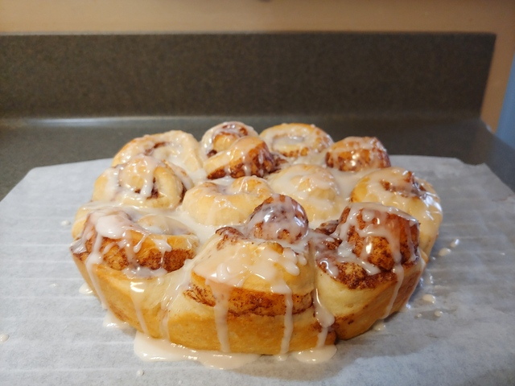

Bread Machine Cinnamon Rolls

A simple yet delicious version of an old favorite. The bread machine does the
heavy lifting in this recipe. The dough can be made a day in advance and
stored overnight. It is proofed one last time, and ready for the oven.
Nothing like starting the day with the smell of fresh cinnamon rolls filling the
house with their delicious smell!"
Ingredients
Dough:
- 1 egg (room temp)
- 1/4 cup vegatable oil
- 1/3 cup white sugar
- 1 tsp salt
- 3 1/2 cups bread flour
- Yeast
- 1 1/2 tsp active dry yeast, or
- 1 tsp quick rise yeast, or
- 1 tsp bread machine yeast
Program Setting: Dough
Steps:
Filling:
- 1/3 cup butter (softened)
- 1/3 cup brown sugar
- 2 tbsp cinnamon
Glaze:
- 1/2 cup powdered sugar
- 2 tbsp milk
- 1/4 tsp vanilla
Notes: